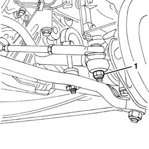
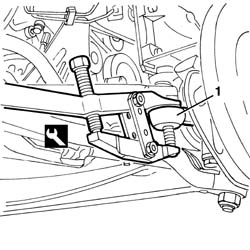
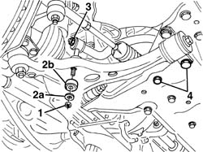
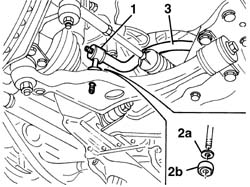

4410C10 FRONT SUSPENSION STABILIZER BAR - R+R - CHECK WHEEL GEOMETRY SEPARATELY
- Path
- Procedures > 44 SUSPENSION AND WHEELS > 4410 FRONT SUSPENSION > 4410C STABILIZER BAR AND ANCHORAGE STRUTS > 4410C10 FRONT SUSPENSION STABILIZER BAR - R+R - CHECK WHEEL GEOMETRY SEPARATELY
- Kind
- repair procedure (removal / refitting; the operation number is the code)
- Applies to
- all engines; all production periods
- Interactive page
- https://sloeber94.github.io/elrnDB-fDct/en/#/244001184
Applies to: all engines; all production periods
 Removing
Removing
 Refitting
Refitting- Position the vehicle on the lift.
Op. 7055B54 UNDER-ENGINE GUARD - R R
1. Undo the nut for the side steering rod right track rod end.

Applies to: all engines; all production periods
1. Disconnect the track rod end using the special tool.
 | Description | Code | Function |
|---|---|---|---|
1 | Extractor | 1.847.038.000 | Track rod end extraction |

Applies to: all engines; all production periods
- Proceed working on both sides of the vehicle.
1. Undo the lower nut fixing the anti-roll bar connecting rod.
2. Keep the washer (2a) and the bush (2b).
3. Undo the upper connecting rod fixing nut.
4. Undo the bolts securing the anti-roll bar to the front crossmember.

Applies to: all engines; all production periods
1. Remove the connecting rod.
2. Keep the washer (2a) and the bush (2b).
3. Remove the anti-roll bar from the left side of the vehicle.

Applies to: all engines; all production periods
Refitting
Removing- Check that the anti-roll bar is not damaged.
- Place the anti-roll bar in position.
- Place the connecting rods and the washers and bushes in position.
- Work on both sides of the vehicle.
- Tighten the bolts securing the anti-roll bar to the front crossmember.
 | Value - daNm | Fastening | Component | Ø |
|---|---|---|---|---|
. | 7.7 - 11.2 | Bolt | FRONT ANTI-ROLL BAR | M12x1.5 |
- Tighten the upper nut fixing the connecting rod to the anti-roll bar.
| Value - daNm | Fastening | Component | Ø |
|---|---|---|---|---|
. | 8.2- 11.9 | Upper nut | ANTI-ROLL BAR CONNECTING ROD | M12x1.25 |
- Place the bush and the washer in position and tighten the lower nut fixing the connecting rod to the track control arm.
| Value - daNm | Fastening | Component | Ø |
|---|---|---|---|---|
. | 5.1 - 7.4 | Lower nut | ANTI-ROLL BAR CONNECTING ROD | M12x1.25 |
- Tighten the nut for the side steering rod right track rod end.
| Value - daNm | Fastening | Component | Ø |
|---|---|---|---|---|
. | 6.1 - 9.0 | Nut | SIDE STEERING ROD | M12x1.25 |
Op. 7055B54 UNDER-ENGINE GUARD - R R
- Remove the vehicle from the lift.